Note: Sep 2015 - This tutorial has been updated for iOS9/Swift2.
This is iOS Animations by Emails for May 2015. It features a tutorial on using CoreImage to create mind blowing transitions on iOS.
Hello from Barcelona! I’m working from here in the month of May so if you’re around - please hit reply to this email or ping me at @icanzilb to grab some beers together or to show me your favorite spots in the city.
Additionally if you liked iOS Animations by Tutorials - could you be a good sport and leave a rating on Amazon? It’ll take you a couple of minutes but it will help me tremendously: http://www.amazon.com/iOS-Animations-Tutorials-Updated-Setting/dp/194287801X/ref=oosr
Thanks!
- Marin Todorov
Tutorial: Transitions with CoreImage
This tutorial is designed for Xcode 7/Swift 2 or a compatible version.
In Chapter 3, Transitions of iOS Animations by Tutorials I cover the built-in transitions you can use to animate in or out your views.
Speaking frankly those transitions are somewhat limited. You can choose between animating the position of the content, cross dissolve, or flip over.
The CATransition class has a property called filter, which allows you to use a CoreImage filter to create a more impressive transition animation.
This works pretty well on OS X - you can create any CoreImage transition filter and just assign it to the filter property of your transition animation.
On iOS the filter property doesn’t seem to do anything. There is a lot of discussion about it online but it seems that the property just does not work.
Luckily it’s not that difficult to create your own view transition animation, which uses a CoreImage transition filter. The 11 steps instructions how to do that are somewhat hidden in the Core Image Programming Guide and serve as the base of this month’s newsletter issue.
By the end of the tutorial you will have developed a UIImageView subclass that allows you to change its image via a CoreImage powered transition like the one below:
By the author of iOS Animations by Tutorials.
Getting started
Do avoid asking you to create an Xcode project and setting up the UI with Auto Layout I’ve prepared a starter project for you.
Download CITransitions-Starter.zip, extract the contents of the archive, and open CITransitions.xcodeproj.
If you run the project right now nothing much happens - you see a photo appear centered on screen:
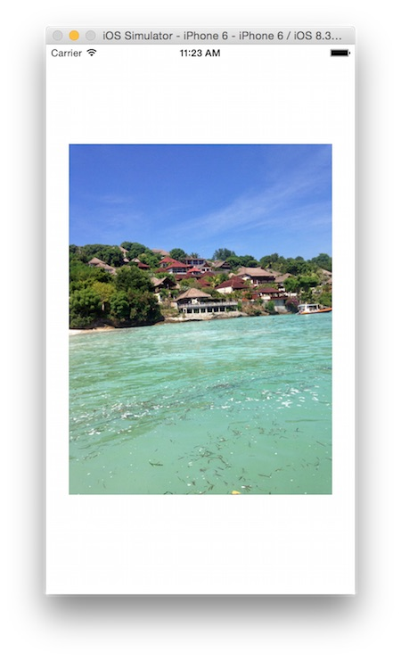
Besides having an image view pop on screen the project is a vanilla single view template. If you look at the Project Navigator you will also spot few images - two photos and 3 different mask images, which you will use later on:
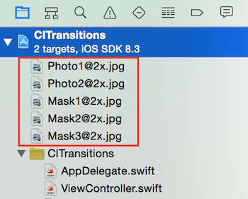
Next you will get your hands dirty by extending UIImageView and adding few basic features to it.
TransitionImageView
From Xcode’s main menu select File/New/File... and then iOS/Source/Cocoa Touch Class. Name your class TransitionImageView, make it a subclass of UIImageView and save it.
Replace the contents of the new file with this code:
import UIKit
import CoreImage
class TransitionImageView: UIImageView {
@IBInspectable var duration: Double = 2.0
private let filter = CIFilter(name: "CICopyMachineTransition")!
private var transitionStartTime: CFTimeInterval = 0.0
private var transitionTimer: NSTimer?
}
You create four new properties:
durationis the transition duration in seconds, it’s marked as@IBInspectableso you can experiment easily with different durations from within Interface Builder.filterholds theCoreImagefilter you are going to use for each transition. The copy machine transition is a classic amusing transition no tutorial can go without. You’ll see that it’s lots of fun :]transitionStartTimeyou will use this property to keep track when the currently running transition started.transitionTimer- to build your own custom animation you will use a timer that will fire when each frame of the animation needs to be rendered.
That’s a great start! I would only like to elaborate a bit more on that filter business...
CoreImage filters crash course
CoreImage filters are very powerful and allow you to create interesting image effects quite easily. Filters usually take in a source image and output a modified version of that image. For example if you apply a Sepia tone filter to a photo the source and result could look like this:
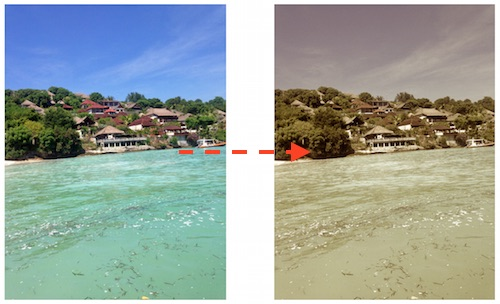
Most filters feature a number of parameters you can adjust to your taste. In the Sepia tone example above you can configure how much should the colors be desaturated compared to the original, and how much should the image be colorized with the Sepia color.
In addition to simple filters there is a list of special ones called “transitions”.
They convert one image into another image. In fact those filters generate all frames of an animation that converts the source image into the target image.
So in practice you can create a transition filter and ask it - “provided the source and target images give me the animation frame at 60% through the animation”. (Or any other arbitrary percentage of completion through the animation of course.)
To build an animation using the filter - you need to keep asking the filter repeatedly for the next frame of the animation and set it as the image of your image view class:
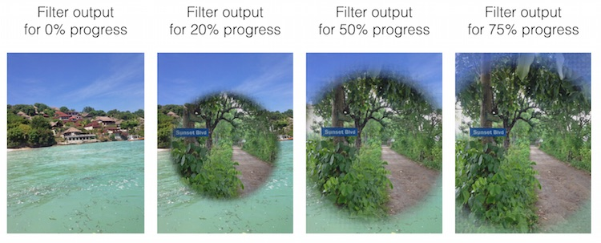
This sounds like a good plan.
Before diving into code you need to make few tweaks in Interface Builder. Open Main.storyboard - you should see the image view like so:
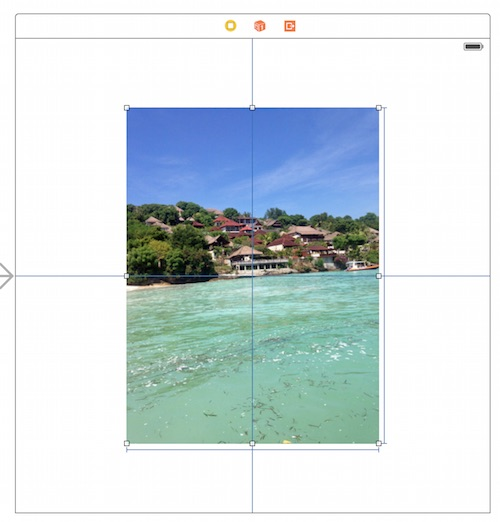
Before trying any transitions you need to set this image view to be in fact an instance of your new TransitionImageView class. Select the image view and set the class from the Assistant Editor:
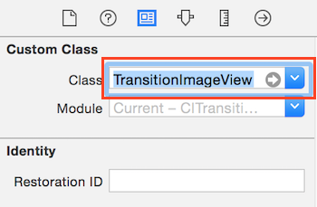
To make sure it all went well - switch to the Attributes Inspector and check if you see your @IBInspectable duration property in there:
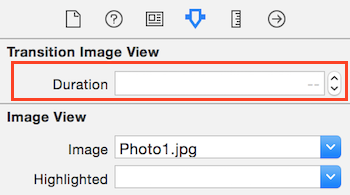
Open ViewController.swift and add an outlet to the image view:
@IBOutlet weak var imageView: TransitionImageView!
Back in Main.storyboard while holding the Ctrl key drag with your mouse from your ViewController object to the image view. From the popup menu select imageView to connect the outlet.
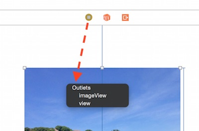
Your UI is completed and you can move on to adding the transition code.
Configuring the transition filter
Newly created filters on iOS come with a pre-defined set of parameters. This is handy because you can easily try filters out and fine tune them later on to your liking.
The minimum input you need to provide to a transition filter are the source and target images. Open TransitionImageView.swift and add a new method to your class:
func transitionToImage(toImage: UIImage?) {
guard let image = image, let toImage = toImage else {
fatalError("You need to have set an image, provide a new image and a mask to fire up a transition")
}
filter.setValue(CIImage(image: image), forKey: kCIInputImageKey)
filter.setValue(CIImage(image: toImage), forKey: kCIInputTargetImageKey)
}
transitionToImage takes a single parameter, which is the target image of the transition. This method will configure the filter and kick off the animation.
Let’s look at the code. First you make sure there is an image already set to the image view and that the toImage parameter is not nil.
Then you set the existing image as the source image of filter by calling setValue(_, forKey:) and setting the key to kCIInputImageKey.
Notice that the CoreImage classes work with CIImage (and not UIImage or CGImageRef).
Finally you also set the target image of filter, you assign the toImage parameter (converted to a CIImage) to the key kCIInputTargetImageKey.
Cool! So far you’ve configured the source and target images of the transition. Now you need to create a timer and start grabbing frames and feeding them to your image view.
Creating an NSTimer animation
Add to transitionToImage::
if let timer = transitionTimer where timer.valid {
timer.invalidate()
}
This check will reset a currently running timer if you call transitionToImage: while a transition is already in progress. The code calls timer.invalidate(), which resets the existing transition and will allow you to start a new one.
Next you will store the start time of the new transition. Add:
transitionStartTime = CACurrentMediaTime()
CACurrentMediaTime() gives you the current absolute time in seconds (including milliseconds precision after the floating point). You will need the animation start time when you calculate the progress through the transition.
Finally you can fire off the animation timer:
transitionTimer = NSTimer(timeInterval: 1.0/30.0,
target: self, selector: Selector("timerFired:"),
userInfo: toImage,
repeats: true)
NSRunLoop.currentRunLoop().addTimer(transitionTimer!,
forMode: NSDefaultRunLoopMode)
The repeat interval for the timer is 1.0/30.0 seconds, i.e. it will fire 30 times per second. You can try higher frame rates but keep in mind that CoreImage will need to run your filter that many times per second too and that might be heavy on the device.
You set the selector of your timer to be timerFired: method on your ViewController class. You still don’t have such a method but you will add it in a moment.
There’s one final detail - an NSTimer has a userInfo property. This property is of type AnyObject? so you can assign anything you want to it. You can use it to store any information for later use. In your case you store the final UIImage of the transition - you will use it when the transition ends to set the final frame of the animation.
Grabbing animation frames
Next you need to add the method to grab an animation frame each time the timer fires. Add the stub for it like so:
func timerFired(timer: NSTimer) {
}
First you need to know how far are you through the transition animation. You need a value in the range [0..1] to express the animation progress.
Add into timerFired::
let progress = (CACurrentMediaTime() - transitionStartTime) / duration
You get the time that passed since the transition started and divide that over the total duration. This should give you a value between 0.0 and 1.0 expressing your progress through the transition.
Next you need to let the filter know the current progress. Add:
filter.setValue(progress, forKey: kCIInputTimeKey)
You set the progress to the key kCIInputTimeKey so the next time you grab the filter’s output it will know which frame of the transition you want.
At this point you are ready to update the current image of the image view with the filter’s output. Just grab the filter result from its outputImage property and set it to the image view:
image = UIImage(CIImage: filter.outputImage!,
scale: UIScreen.mainScreen().scale,
orientation: UIImageOrientation.Up)
You create a new UIImage out of the CIImage filter result, and apply the proper screen scale and orientation.
This code should already power your image view class with a cool transition but let’s add couple more lines to wrap up the timerFired: method.
Add:
if CACurrentMediaTime() > transitionStartTime + duration {
image = timer.userInfo as? UIImage
timer.invalidate()
}
This code checks if more time has passed that the transition duration and if so it:
sets the final image of the transition by grabbing it from the
userInfoproperty of the timer (you stored it there for future use).invalidates the timer, which stops feeding new frames to the image view.
Okay, that's a wrap-up! Let’s try how does the transition look like!
Your first CoreImage transition
Yes - you guessed it! You never actually call transitionToImage:.
Let's make the image view transition to a new image when you tap the screen.
Open ViewController.swift and add to viewDidLoad::
view.addGestureRecognizer(
UITapGestureRecognizer(target: self, action: Selector("didTap"))
)
You add a gesture recognizer to the view controller's view and tell it to call didTap any time the user taps the view. Cool - now add didTap and a helper class property:
var currentImageName = ""
func didTap() {
currentImageName = (currentImageName == "Photo2.jpg") ? "Photo1.jpg" : "Photo2.jpg"
imageView.transitionToImage(UIImage(named: currentImageName))
}
Each time you tap the screen didTap will change the image alternating between Photo1.jpg and Photo2.jpg. This will make testing multiple times much easier.
Alrighty! You are all ready to go.
One final note - from now on you need to test on your device. The Simulator isn't that good in the kind of effects you are creating in this tutorial so you will need to build and run on your device.
Run the app and tap the screen. You will see your first CoreImage transition:
The filter animation resembles the kind of light you see moving under the lid of a working copy machine - isn’t that a funny one? :]
You will develop more elaborate transition in the tutorial's next part. For the moment let's see how to adjust couple of parameters on your current transition animation.
Under the code where you set the source and target images add 2 new lines to set the filter’s extent and color:
let extent = CIVector(x: 0.0, y: 0.0,
z: image.size.width * 2.0, w: image.size.height * 2.0)
let color = CIColor(red: 0.6, green: 1.0, blue: 1.0)
filter.setValue(extent, forKey: kCIInputExtentKey)
filter.setValue(color, forKey: kCIInputColorKey)
extentdefines a vector that makes the effect cover the whole area of the image. E.g. the Copy Machine light will go all the way to the right edge instead of the default mid-way. When you create the vector you multiply the width and height by2.0because the assets are provided in @2x size.coloris a white-blueCIColorwhich will give the copier light a colder blue tint.
Finally you set the two values to the kCIInputExtentKey and kCIInputColorKey filter input keys.
Run again the project on your device and tap few times the screen to see the adjusted transition - you can see the cold blue light go all the way to the end of the screen.
Neat!
If you are curious to see what are all the parameters the Copy Machine transition supports you can have a look at the CICopyMachineTransition documentation online.
More elaborate transition animations
There are a number of different transition filters. You can create a variety of animations by using each of them and adjusting their parameters. For the list of available filters and how to configure them have a look at the online documentation.
In the rest of the tutorial you gonna have a quick look at CIDisintegrateWithMaskTransition, which allows you to create really cool transitions.
Open TransitionImageView.swift and add a new property:
@IBInspectable var maskImage: UIImage?
CIDisintegrateWithMaskTransition uses a mask image so you add a property to keep that mask image safely stored.
Next find the filter property declaration and change it to this:
private let filter = CIFilter(name: "CIDisintegrateWithMaskTransition")!
The new filter you are going to use has a different name so you need to initialize the filter with it.
Now scroll down to transitionWithImage:. Change the if condition at the beginning of the method to also check for a maskImage like so:
guard let image = image, let toImage = toImage, let maskImage = maskImage else {
Next - remove the extent and color filter parameters from the code:
let extent = CIVector(x: 0.0, y: 0.0, z: image!.size.width * 2.0, w: image!.size.height * 2.0)
let color = CIColor(red: 0.6, green: 1.0, blue: 1.0)
filter.setValue(extent, forKey: kCIInputExtentKey)
filter.setValue(color, forKey: kCIInputColorKey)
The CIDisintegrateWithMaskTransition does not use color or extent parameters and if you leave them in you will get a crash from CoreImage.
In the place of the code you just deleted add this to set the transition mask image:
filter.setValue(CIImage(image: maskImage), forKey: kCIInputMaskImageKey)
This is all you need to change in your class to use the new transition filter. Before running the project switch to Interface Builder and set the Mask Image property on your view to Mask2.png.
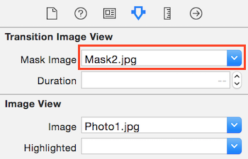
Run the project again and you will observe a totally different and extremely cool transition:
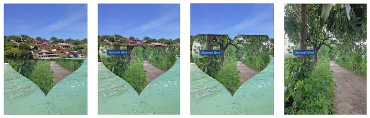
What CIDisintegrateWithMaskTransition does is take the image mask:
and show parts of the target image progressively from the dark areas on the mask image to the white areas of the mask image. The image below demonstrates how this works for your current transition:
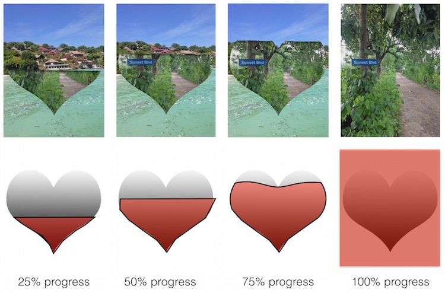
You can see how in the beginning of the transition only the black and very dark parts of the mask image are taken into account. Then the transition progressively includes dark gray, gray, and silver areas. Finally all of the mask image is considered as a mask including all shades of gray and finally white color.
This mask image demonstrates the effect very well because it’s one solid gradient and you can clearly see how the animation is built.
Try the two other mask images I included in the assets. Mask1.jpg which looks like this:
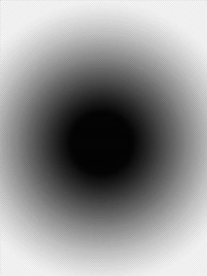
will produce a transition like this:
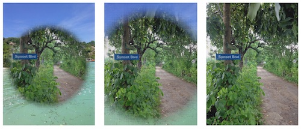
And finally Mask3.jpg:
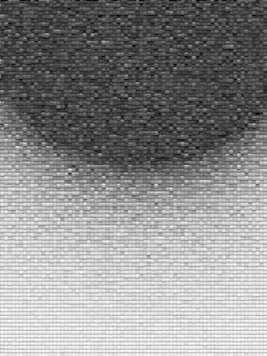
will produce a very cool falling tiles animation - check it out!
As you can see - even only CIDisintegrateWithMaskTransition single handedly allows you to create an infinite amount of transition animations! And there’s plenty more that CoreImage offers.
Don’t forget to browse through the list of transition filters.
Where to go from here?
One cool idea to consider is to create a ViewController transition by using a CoreImage transition filter. For example you can extend the project in Chapter 23, Interactive UINavigationController Transitions to feature a CoreImage transition.
It’s not a difficult task since the gesture recognizer in that project already gives you the progress through the pan gesture as a value in the range [0..1].
You can take screenshots of the old and new view controllers and then use the two images to create a CoreImage powered presentation transition.
If you get to do some work in that direction ping me by replying to this email or on Twitter at @icanzilb.